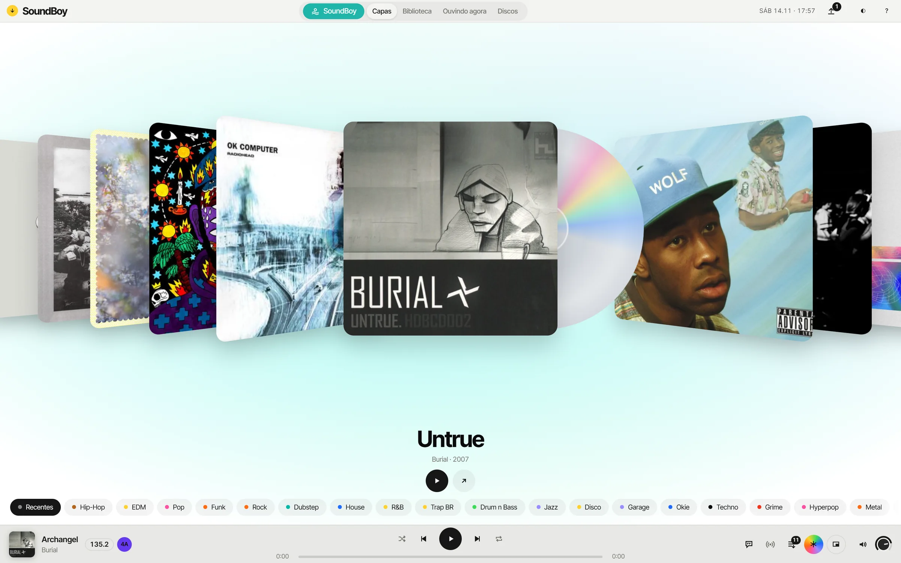
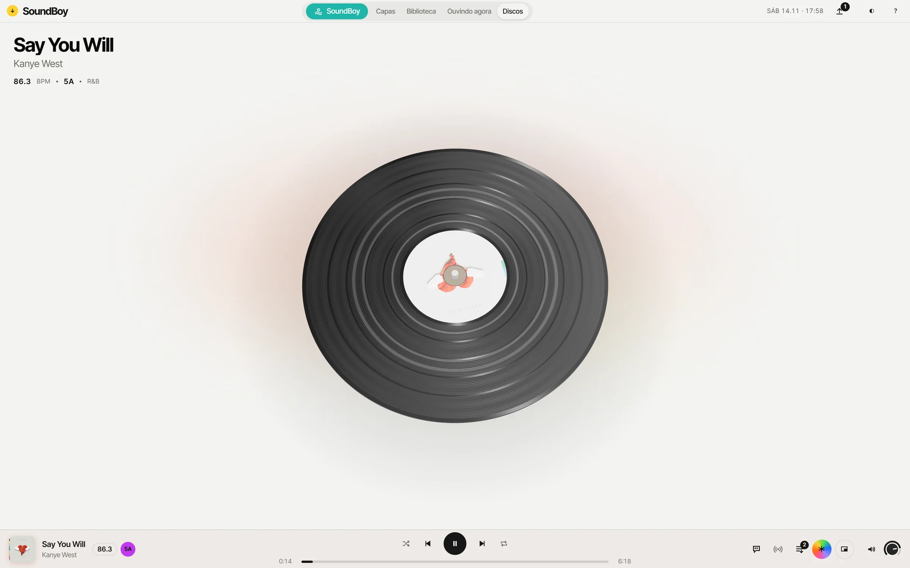
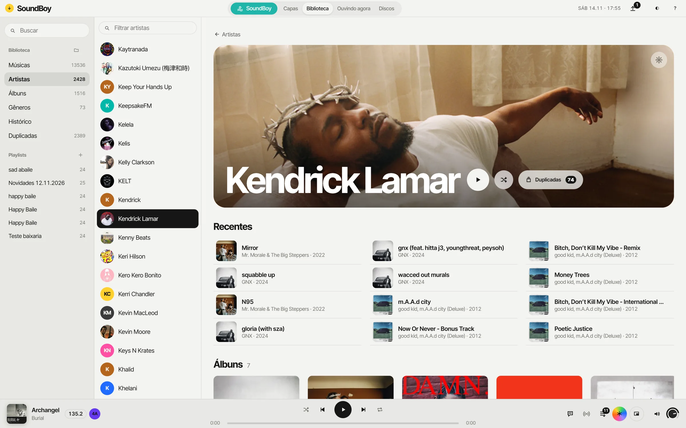
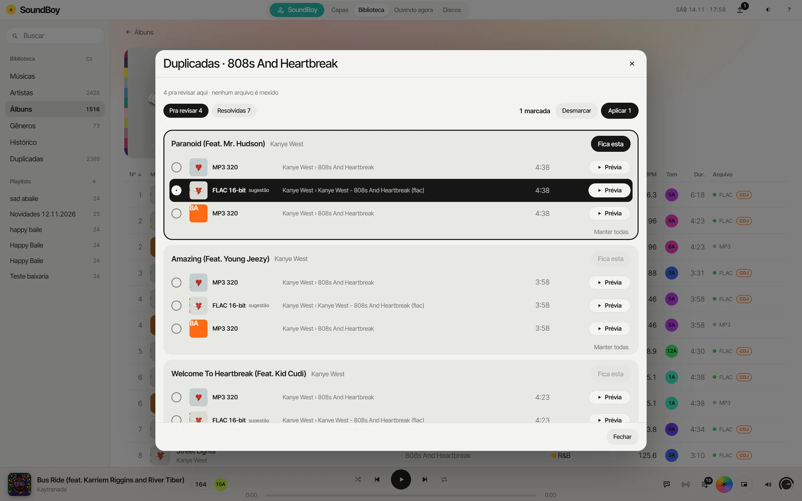

A capa dá o tom.
As cores do álbum iluminam a interface e acompanham a reprodução.
Um player para quem coleciona música.
Explore cada disco. Redescubra o que já é seu.

Você escolheu
cada disco.
O SoundBoy reúne seus arquivos em uma biblioteca feita para explorar. Das capas às histórias. Do primeiro play à próxima descoberta.
TELA CHEIA / SETE VISUAIS
Luz, textura e movimento. Abra a tela cheia e veja sua música ganhar uma linguagem visual. Sete atmosferas para explorar, com cores que você pode escolher.
Térmico / Captura do aplicativo
07visuais para mudar o clima
03estilos de letra para entrar na música
01tecla para abrir tudo: V
LETRAS / LINHA · CINÉTICA · PÔSTER
Acompanhe cada verso. Deixe as palavras dançarem. Ou transforme a tela em um pôster vivo. Três maneiras de ver a letra, no tempo da música.
Pôster / Captura do aplicativo
Letras sincronizadas quando disponíveis. As imagens mostram momentos capturados dos estilos em reprodução.
01 / OUVIR
Escolha pela capa. Entre no álbum. Acompanhe a faixa com letra, informações e músicas relacionadas. Cada vista revela um lado da sua coleção.

A paleta da capa vira luz. BPM, tom e qualidade ficam por perto.
Seus álbuns em uma estante visual. Escolher o próximo disco faz parte do prazer.

Vinil, CD ou picture disc. Um novo encontro com o álbum inteiro.
Tela 1 de 3: Ouvindo agora
As cores do álbum iluminam a interface e acompanham a reprodução.
Quando há letra sincronizada, cada verso aparece no tempo da música.
Coloque uma faixa a seguir, reorganize a fila ou deixe o álbum tocar na ordem.
DISCOS / QUATRO CENAS EM 3D
O reflexo do CD. Os sulcos do vinil. A agulha no toca-discos. Troque de aparelho, explore materiais e veja o álbum encontrar uma nova forma de tocar.
Portátil / Captura do aplicativo
Vinil, CD, holográfico, picture, op-art e acrílico. Cada material muda a presença do disco.
Deixe o SoundBoy alternar aparelhos e materiais enquanto a música continua.
Grave até 60 segundos da cena com áudio, direto no aplicativo.
LUZ / MODO NOTURNO
Do claro ao noturno em um toque. A música continua no centro, e o SoundBoy lembra como você gosta de ouvir.

Deslize para explorar duas telas reais do aplicativo.
02 / EXPLORAR
Ligue o Rádio e deixe a coleção conversar. O SoundBoy procura a próxima música por BPM e tonalidade, variando os artistas pelo caminho.
O BPM aproxima faixas pelo andamento. Uma forma diferente de percorrer o que você já tem.
O tom ajuda a encontrar combinações harmônicas entre músicas da biblioteca.
A próxima surpresa pode estar em um álbum que você não ouve há tempos.
ARTISTAS / MAIS PERTO
Biografia, fotos e links oficiais ao lado da música que você guardou. Álbuns, remixes e participações ganham seus próprios lugares.

MINIPLAYER / SEM SAIR DO MOMENTO
Só a capa. Uma barra de controles. Ou a letra inteira. O miniplayer fica sobre as outras janelas e acompanha o seu dia.
02 / Barra de controles
BUSCA RÁPIDA / CTRL + K
Faixas, artistas, álbuns, gêneros, playlists e comandos. A busca rápida reúne tudo em um só lugar.
HISTÓRICO DE ESCUTA
Revisite o que tocou por dia, veja os artistas e gêneros da semana e dê play de novo.
03 / COLECIONAR
O mesmo disco pode chegar por caminhos diferentes. Compare as versões, ouça antes de escolher e mantenha a biblioteca do seu jeito.
O SoundBoy encontra duplicadas e sugere quais manter nas listas, priorizando formatos sem perda. Você compara as informações e decide.
O formato é uma pista sobre o arquivo. A qualidade da gravação também depende da fonte.
E os meus arquivos?
Ouça sem internet e sem criar conta. Ao montar a biblioteca, o SoundBoy lê suas pastas sem mover os arquivos.
SOUNDBOY / FICHA DO PRODUTO
Os detalhes que importam.
Sem precisar procurar nas entrelinhas.
ANTES DO PRIMEIRO PLAY
É um player para os arquivos de música que você tem no computador. Não inclui uma assinatura nem um catálogo de músicas para streaming.
Adicionar pastas à biblioteca não move nem apaga seus arquivos. Na revisão de duplicadas, você escolhe as versões que aparecem nas listas. A exclusão de um arquivo exige uma ação sua.
Sim. A reprodução dos seus arquivos é local. A internet é usada para buscar conteúdos como capas, letras e informações de artistas. Fotos e biografias já carregadas ficam guardadas.
O Rádio monta a sequência com faixas da sua biblioteca. As sugestões usam andamento e tonalidade; quando faltam combinações, podem recorrer ao gênero. O resultado depende das músicas e informações disponíveis.
Baixe o instalador oficial, abra o arquivo e escolha suas pastas de música. A versão 0.9.1 ainda não tem assinatura digital, então o Windows pode exibir um aviso de aplicativo não reconhecido. Confira a origem e as informações na página oficial de versões antes de instalar.
SOUNDBOY / SEU PRÓXIMO PLAY
Sua coleção está pronta para ser ouvida de novo.
Ver todas as versões ↗